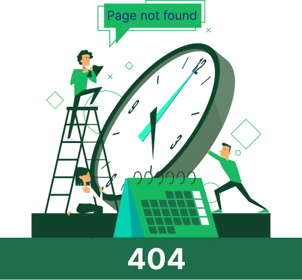

<!DOCTYPE html>
<html lang="vi">

<head>
    <meta charset="UTF-8">
    <meta name="viewport" content="width=device-width, initial-scale=1.0">
    <title>Đồng Hồ 24h | Lỗi 404</title>
    <link rel="icon" type="image/png" href="./img/logo/logo-favicon.png">
    <link rel="stylesheet" href="https://cdn.jsdelivr.net/npm/swiper@11/swiper-bundle.min.css" />
    <!-- <link rel="stylesheet" href="../css/style.min.css"> -->
    <link rel="stylesheet" href="./css/base.css">
    <link rel="stylesheet" href="./css/custom.css">
    <link rel="stylesheet" href="./css/responsive.css">
    <link rel="stylesheet" href="./css/utility.css"> 
</head>

<body>
    <header class="container-f" data-include="./component/header.html"></header>
    <main class="container-f flex flex-col center-hor">
        <section class="flex bg-gray container-f">
            <div class=" container-l nav-bar__container">
                <a href="javascript:void(0)" class="nav-bar__item">Trang chủ</a>
                <a href="javascript:void(0)" class="nav-bar__item">Không tìm thấy trang</a>
            </div>
        </section>
        <section class="container-f container-padding bg-white">
            <div class="flex center-ver flex-col pagenotfound-container container-xs">
                
                <a href="./index.html">Quay lại trang chủ</a>
            </div>
        </section>
        
    </main>
    <footer class="container-f bg-white center-ver" data-include="./component/footer.html"></footer>
    <section class="cta-floating container-s flex gap-20" data-include="./component/cta-floating.html"></section>
    <section class="btntotop__container pos-fixed bg-white" data-include="./component/rolltotop.html" id="btnToTop"></section>
    <script defer src="https://cdn.jsdelivr.net/npm/swiper@11/swiper-bundle.min.js"></script>
    <script defer type="text/javascript" src="./js/frontend.js"></script>
</body>

</html>
